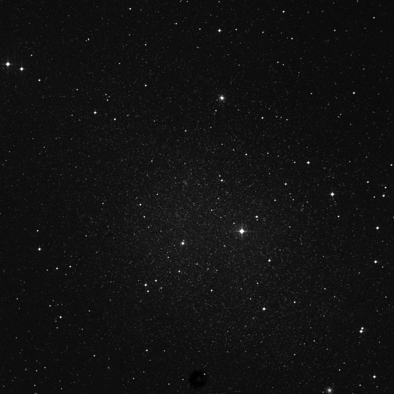
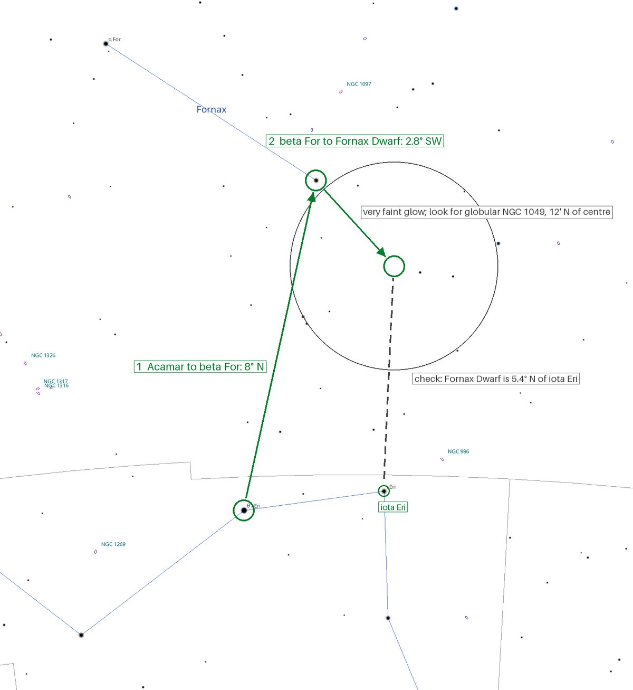
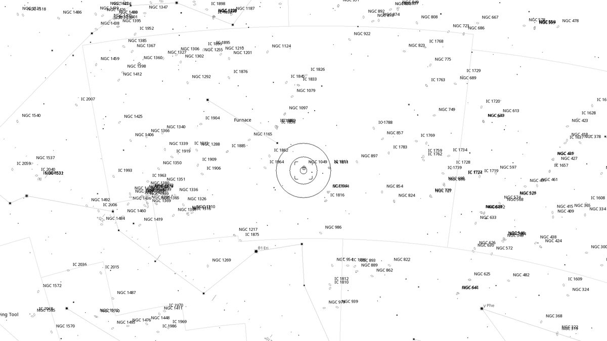
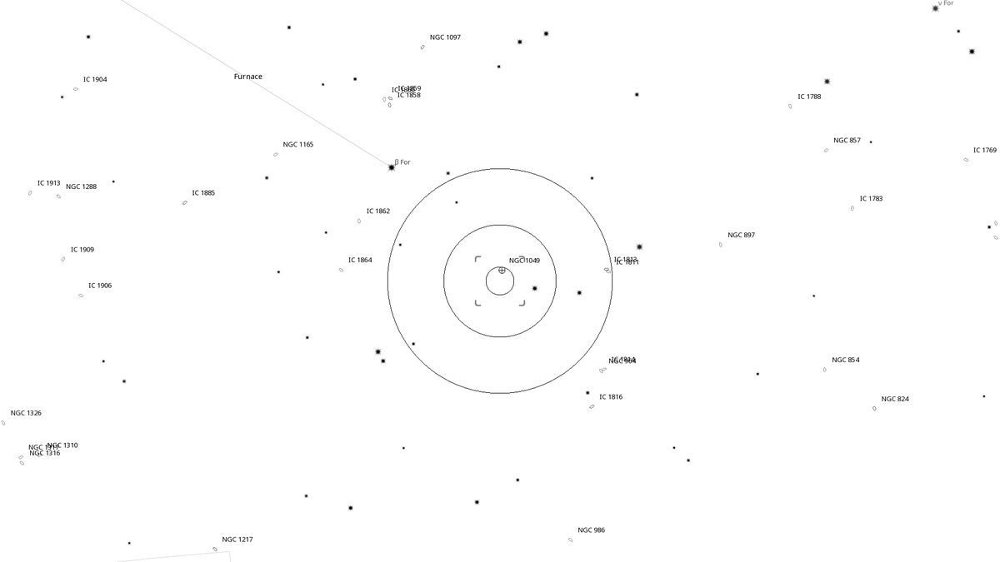
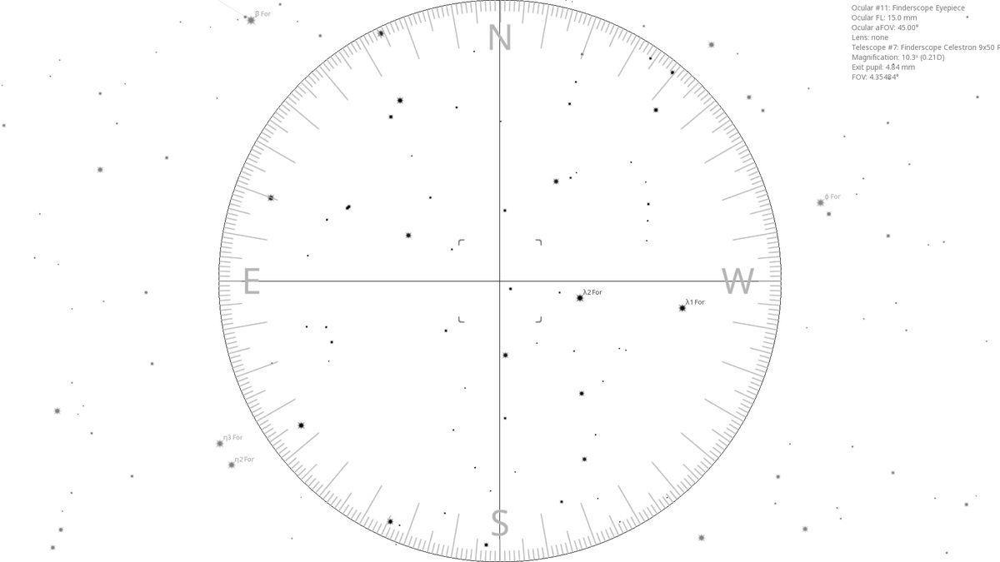
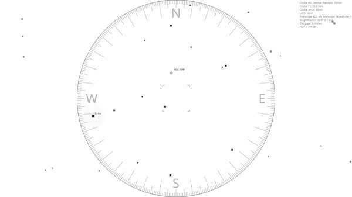

Fornax Dwarf (Gal)
| R.A. | Dec. | Size | Mag | SB | Class | Type | Distance | Chart |
|---|---|---|---|---|---|---|---|---|
| 02h 40m 00.6s | -34° 26′ 50.8″ | 27.5′ | 7.4 | 14.3 | dSph | Gal | -- | -- |

Interactive Sky View
Background
The Fornax Dwarf (PGC 10074, ESO 356-4) is a dwarf spheroidal galaxy, a satellite of the Milky Way ≈480,000 light-years away. Its total magnitude of 7.4 is spread across ≈27', so the surface brightness is only ≈14.3 mag per square arcminute. Harlow Shapley found it on photographic plates in 1938, and at the eyepiece it is no more than a faint brightening of the sky background, if it shows at all.
The easier targets are its six globular clusters. The brightest, NGC 1049, lies ≈12' north of the galaxy's centre and was catalogued by John Herschel in 1835, a century before the galaxy itself. It looks like a small, fuzzy star, and it is a globular cluster seen in another galaxy.
My Observing Notes
(Not yet observed)
Charts




